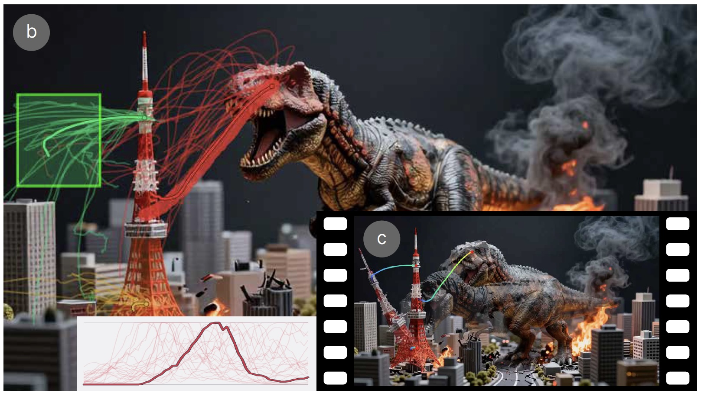
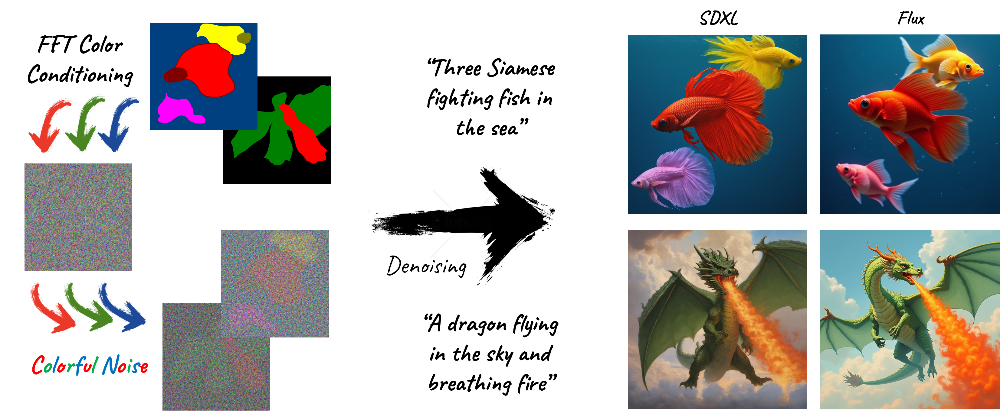
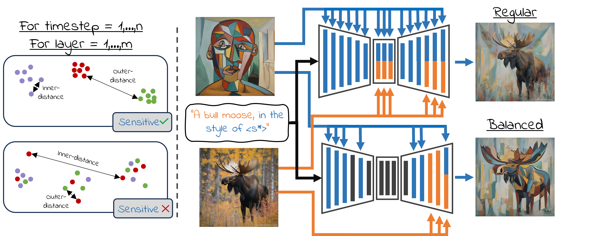
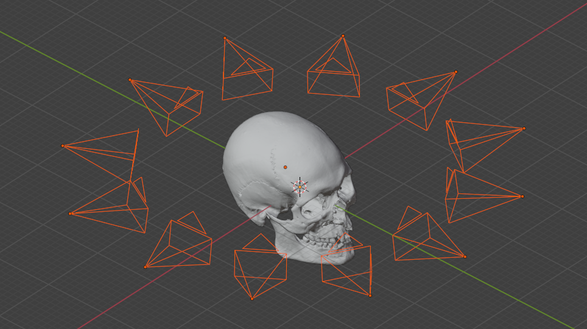

{kind=link}
Aug 2026
Many-Videos Browsing accepted to SIGGRAPH Asia 2026 🦧 🌴 🤿
I am a Ph.D. student and a member of the Canvas Lab at Reichman University, advised by Prof. Ariel Shamir.
I am interested in human creativity, which motivates my work on transforming diffusion models from automated, industrial tools into creative instruments that people can actively engage with. In parallel, I investigate how computers might develop their own artistic voice, novel forms of expression, and perceptual understanding. While my work spans 2D, video, and 3D domains, it currently focuses primarily on the image domain.
Currently I'm interning at Adobe in Seattle as a Research Scientist in the Creative Intelligence group, mentored by Aaron Hertzmann and Eli Shechtman. Previously, I was a Visiting Researcher in the IGARASHI Lab at the University of Tokyo, working with I-Chao Shen and Takeo Igarashi.
Off-screen: painting, nature photography, gaming, and spending time with family and friends.
Many-Videos Browsing accepted to SIGGRAPH Asia 2026 🦧 🌴 🤿
Joined Adobe in Seattle for a summer internship, mentored by Aaron Hertzmann and Eli Shechtman 🦦 🏔️ 🐋
Colorful-Noise accepted to SIGGRAPH 2026 🎥 🌌 🧙
Started a Visiting Researcher position at the University of Tokyo 🇯🇵 🦌
"Conditional Balance: Improving Multi-Conditioning Trade-Offs in Image Generation" accepted to CVPR 2025 🎉 🧝 🐈
Officially started my Ph.D. at Reichman University.
M.Sc. thesis "Understanding Art Paintings with Algorithms" selected for the graduation ceremony.
Semantic Segmentation in Art Paintings accepted to Eurographics 2022.
Completed my M.Sc. (Magna Cum Laude) at the Hebrew University.
Started my M.Sc. at the Hebrew University of Jerusalem.





A collection of Python bpy scripts that gather and automate useful Blender functionality for computer graphics researchers.